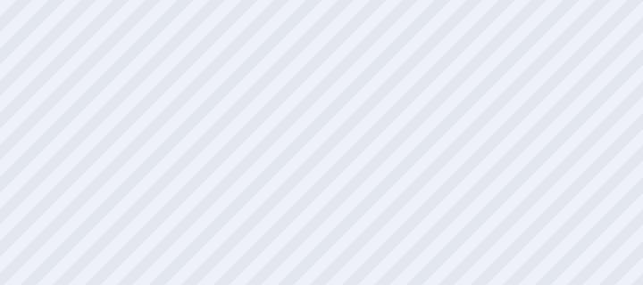
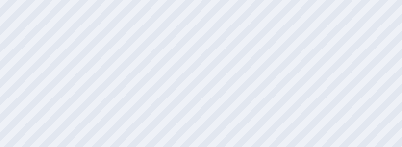
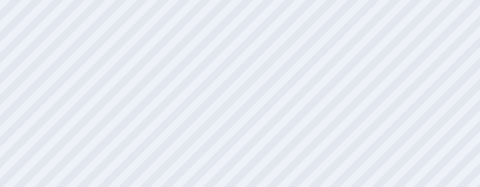

Towards Proactive Omni-Modal Reasoning over Real-World Livestream
Learning when to stay silent, when to remember, and whom to speak to — in a live social environment.
Most streaming video models assume their job is to keep talking — narrate every chunk or answer every explicit query. LiveAssistant challenges that assumption. It reframes livestream understanding as selective participation in a shared social environment: at every incoming chunk the model decides whether to act, whom to address, and what to say — including the choice to stay silent.
Should I act right now, or just keep watching?
Should I quietly record this clue for later?
Should I speak — and to whom, about what?
Instead of chasing another video-QA leaderboard, LiveAssistant defines a native task: causal, mixed-initiative decision-making over heterogeneous, long-horizon, multi-party signals.
Actions are routed to viewers, hosts, or moderators — the decision almost every prior online-video model skipped entirely.
Native video + audio + comments + gifts + viewer dynamics + room metadata, fused directly — not "frames + ASR text".
<obs> and <mem> are supervised as deliberate choices, so the model learns restraint instead of over-talking.
Reconstructs replay timelines from HLS slices, aligns heterogeneous signals into 10-second decision trajectories, with automatic checks and human review.
Marker-Aware Multiturn SFT (MA-MSFT) → Streaming Multiturn GSPO (SM-GSPO), with agent-in-the-loop reward optimization.
LiveAssistant compresses every livestream chunk into one of three structured actions:
<obs> → keep observing; do not disturb the stream
<mem> ... </mem> → write a private clue to memory (not spoken)
<ans> <viewer|host> [task] ... </ans> → speak to a specific recipient with a taskThe task vocabulary spans real livestream needs:
The same event can route differently. “Many comments asking about size” → a FAQ answer for viewers, or a cue to the host to clarify. “The stream suddenly goes quiet” → often nothing for viewers, but a pacing alert for the host.


Video, audio, text and platform signals are encoded and serialized in temporal order — host tone, background sound, comment density, gift events and viewer swings all shape the decision.
Routing is part of the policy, not post-processing. A single autoregressive pass produces activation, recipient and content from a shared causal representation.
A marker-weighted vocabulary loss plus an auxiliary state candidate loss keep rare-but-critical structural decisions from being drowned out by response text, while preserving open-vocabulary generation.
Turn-by-turn causal rollouts fix exposure mismatch. A hierarchical reward enforces structure before semantics, with turn-level and trajectory-level credit for local correctness and long-horizon restraint.
A two-tier cache: dense recent window at full resolution + compressed long-term memory, aligned by turn so an event's video/audio/comments stay together.
Data annotation, SFT and RL are all built around the same continuous trajectory, minimizing the classic streaming train/inference gap.
Evaluated under strictly causal inputs (native audio + video + comments + gifts), with streams split by room to remove leakage.
The benchmark state distribution is deliberately non-trivial — 48.2% OBS · 25.9% MEM · 25.9% ANS — penalizing both "always talk" and "always silent" policies.
| Method | State All | OBS | MEM | ANS | Recip. | Task | Count | Gemini | Hard |
|---|---|---|---|---|---|---|---|---|---|
| Qwen3-Omni polling | 0.00 | 0.00 | 0.00 | 0.00 | 0.00 | 0.00 | 0.00 | 0.00 | 0.00 |
| MA-MSFT | 70.05 | 87.06 | 36.50 | 72.00 | 66.42 | 52.55 | 72.00 | 83.90 | 81.56 |
| MA-MSFT + SM-GSPO ★ | 71.14 | 83.31 | 44.50 | 75.17 | 69.23 | 55.61 | 75.14 | 81.78 | 82.32 |
Reading the numbers. The untrained base model scores 0 — the task lies outside its instruction-following distribution, confirming a genuinely new capability. SM-GSPO improves the decisions that matter most (MEM +8.0, ANS +3.2, recipient +2.8, task +3.1, count +3.1, Hard +0.8) with an honestly reported trade-off on OBS (−3.75) and content score (−2.12).

Real-time narration, background recap for newcomers, highlight cues, and direct answers to questions raised in comments.
Surfacing comment questions, pacing alerts, key product/game moments, and consolidated audience feedback.
Grounded risk cues, anomaly flags, and clips that need review during long-running streams.
LiveAssistant moves livestream understanding from passive answering toward content-driven proactive collaboration — arguably the piece a real production system needs most: not talking more, but knowing when to talk and whom to talk to.
@article{gao2025liveassistant,
title = {Live Assistant: Towards Proactive Omni-Modal Reasoning over Real-World Livestream},
author = {Gao, Shujian and Yan, Jiamei and Zhou, Penghao and
Wang, Qinglei and Wu, Zuxuan and Jiang, Yu-Gang},
journal = {arXiv preprint},
year = {2025}
}